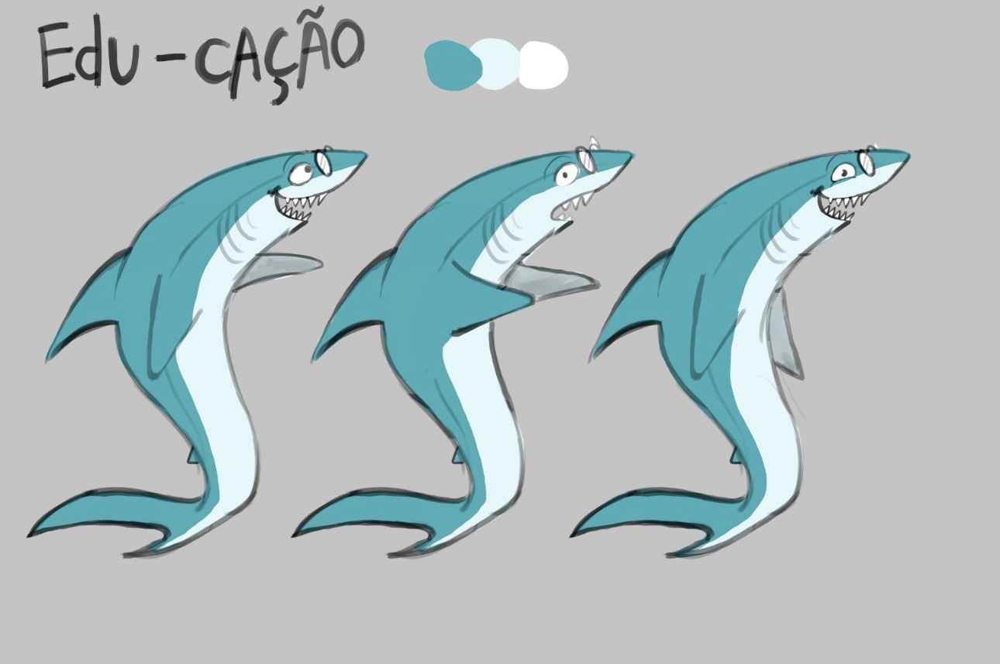
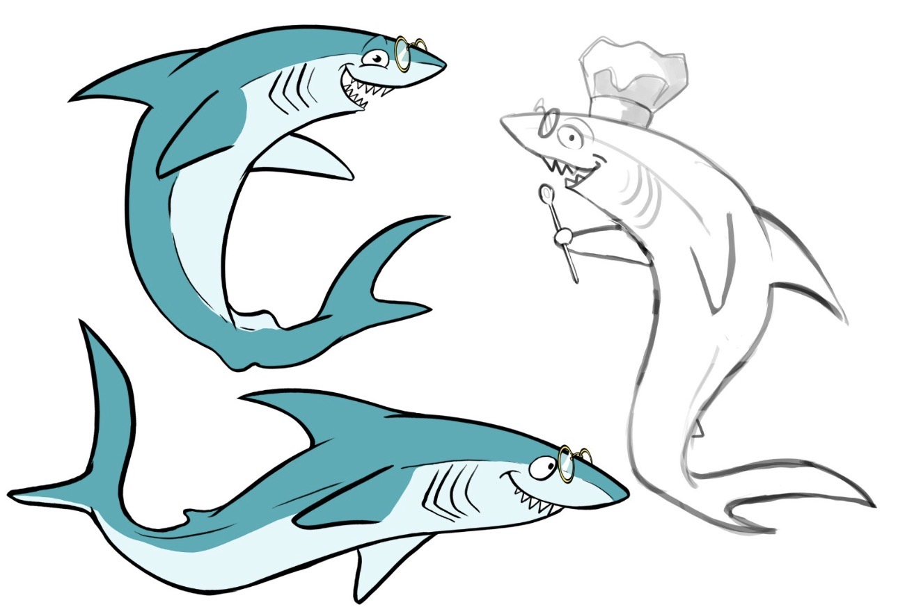
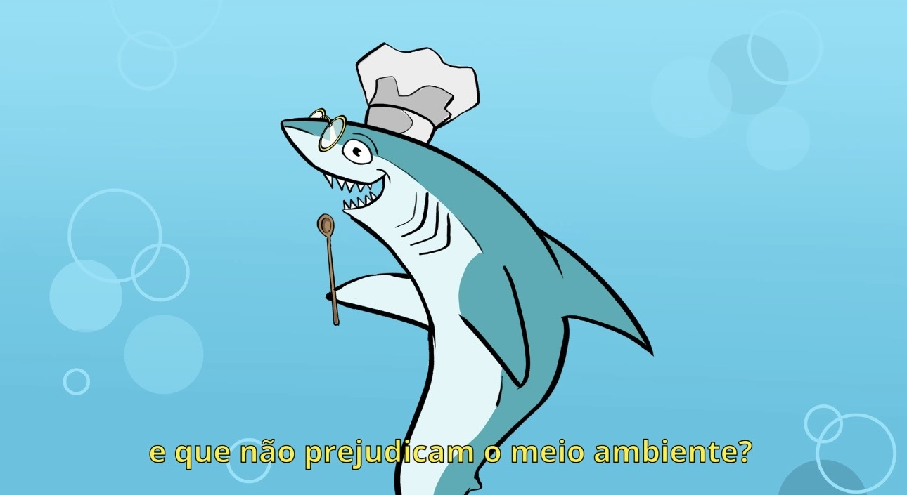
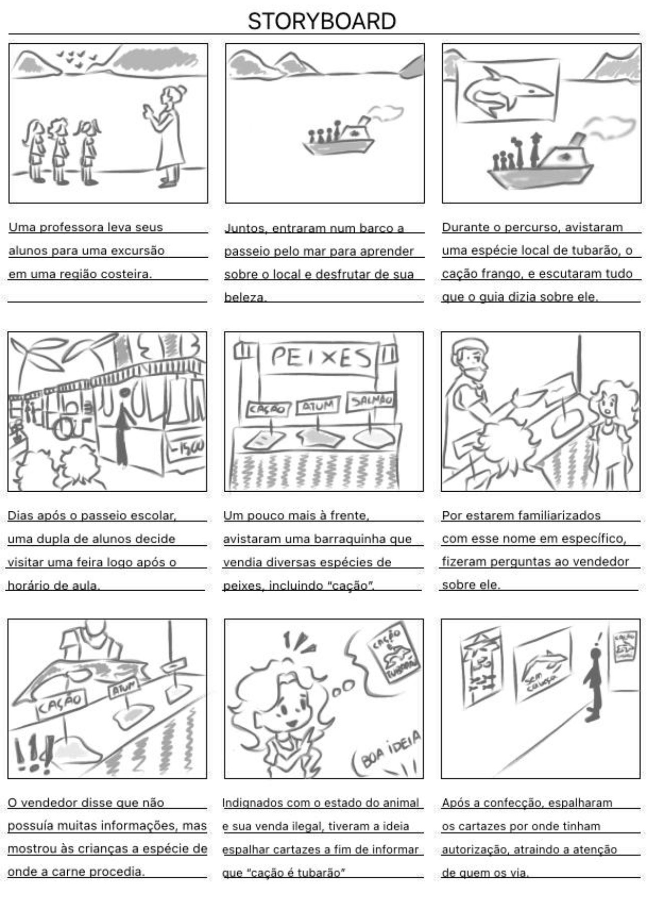
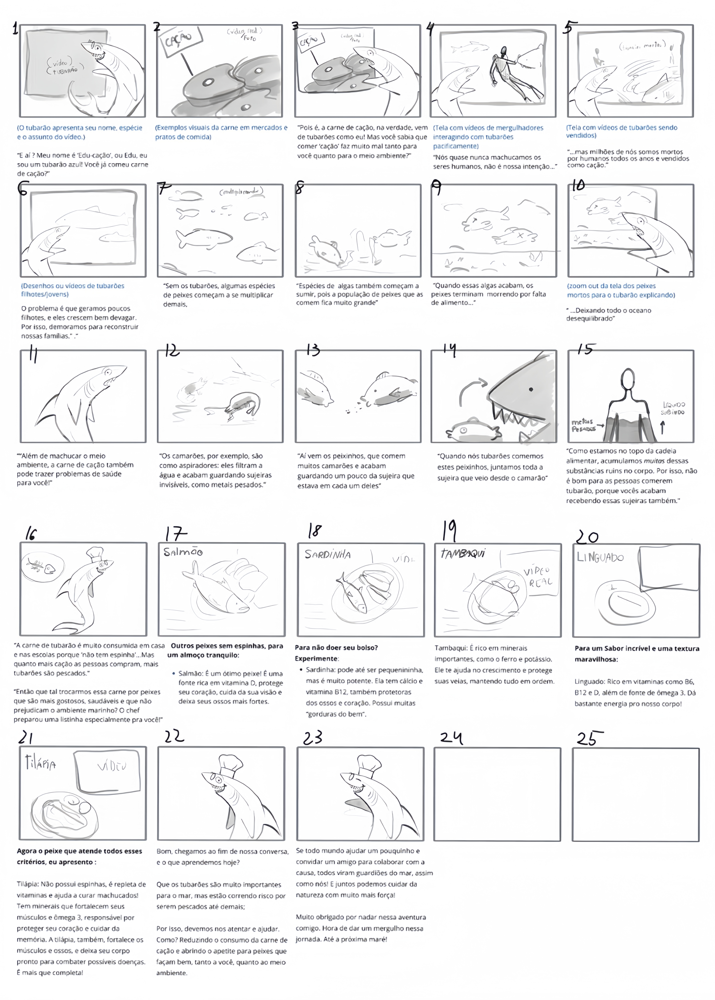

Extras



Concept arts e resultado final (feitos por Polasek)


Storyboard inicial do projeto (feito por Bia) e storyboard final (feito por Polasek).
Exposição inicial das primeiras alternativas (cartazes e storyboard).